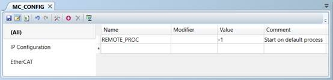

System Parameter (MC_CONFIG / FLASH)
When the TrioPC ActiveX opens a synchronous connection to the Motion Coordinator, the REMOTE_PROGRAM is started on the highest available process. REMOTE_PROC can be set to specify a different process for the REMOTE_PROGRAM. If the defined process is in use then the next lower available process will be used.
REMOTE_PROC is stored in Flash EPROM and can also be set in the MC_CONFIG script file.
|
-1 |
Use the highest available process (default) |
|
-2 |
Turn off the Active X processing
|
|
0 to max process |
Run on defined process |
It is recommended to set the REMOTE_PROC parameter in MC_CONFIG whenever there is a connection to TrioPC Motion ActiveX.
Set REMOTE_PROGRAM to start on process 19 or lower (using the command line terminal).
>>REMOTE_PROC=19
>>
Reset the Motion Coordinator after setting the value in the command line terminal.
Remove the REMOTE_PROC setting so that REMOTE_PROGRAM starts on default process (using MC_CONFIG).
'MC_CONFIG script file
REMOTE_PROC = -1 'Start on default process on connection
